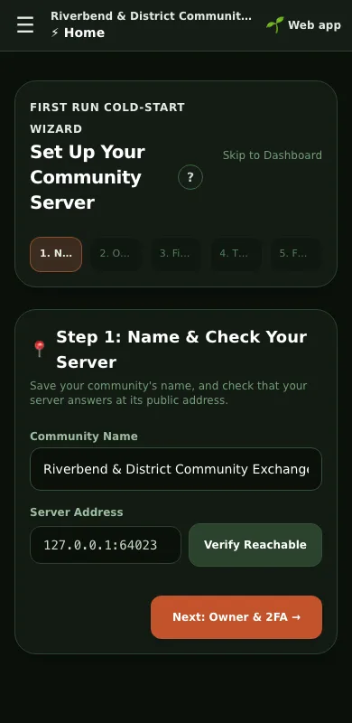

Operator manual · Setting up
First-time setup
The first start of your server, claiming it with your phone, the first owner, and what the setup wizard does and does not do.
Before the first start
Your server keeps everything in one folder, data, next to docker-compose.yml. The server sees it as /data. Back up that folder and you have backed up the whole community.
A new server has no admin password, and you do not put one in the .env file. If ADMIN_PASSWORD is there, a new server ignores it, and its log says so at every start until you take it out of .env. The community's first owner claims it with a one-time claim code instead: see Claim your community: the address, then your phone, below.
On its first start the server makes the claim code and puts it in a file, data/claim-code.txt, that only the server can read. It never prints the code in the log, because the log is kept for as long as the server runs and gets copied into support requests. beanpool claim shows it to you. You can also read it with: docker compose exec beanpool-node cat /data/claim-code.txt
Servers that still have a password
A server set up before the claim code keeps its admin password exactly as it was. Its first password was the ADMIN_PASSWORD in .env, or one the server made up and put in data/first-admin-password.txt. Read that file with: docker compose exec beanpool-node cat /data/first-admin-password.txt. Until you change the password in Access & Security, every start reminds you in the log that the file is still there, without printing the password. The file is deleted the moment you change it. The server reads ADMIN_PASSWORD only on its first start, so to change the password, use Settings.
What the first start creates
- data/genesis.json and data/community.key: your community's own key. This key is not a person and is not the owner. Once you make a recovery code, a backup from Settings carries both, locked. Until then only a copy of the data folder does: see Backups and replicas.
- data/state.db: the database, with every member, post, deal and vote.
- data/local-config.json: two-factor settings, gateway settings, the replication token if this server is a backup or has one, and the claim code's scrambled copy until it is used. On a server that still has an admin password, that password's scrambled copy too.
- data/claim-code.txt: the one-time claim code, in plain text, until a phone claims the community with it. Then it is deleted. A backup from Settings never carries it.
- data/first-admin-password.txt: only on a server set up before the claim code with ADMIN_PASSWORD empty. The password the server made up, in plain text, until you change it. A backup from Settings never carries it, but a copy of the whole data folder does: change the password before you copy the folder anywhere.
Claim your community: the address, then your phone
The last step of an install, on the server:
docker compose exec beanpool-node beanpool claim
- It asks for a name for your community's address, ending in .beanpool.org (or give it with --name cairns). It waits up to three minutes for the name to go live and reach your server. A name that waits for approval by the BeanPool project moves over by itself once approved. A name that is taken: it says why and asks for another. Press Enter to skip; use --address https://your.domain for your own address, or --no-name to set one later in Settings. Nothing here needs the BeanPool project: if its address service is down, the claim still works.
- Without a live name, the phone needs your server's own address: give it with --direct http://IP:PORT, or the phone asks for it.
- It shows the one-time claim code and a QR code. Scan the QR code with your phone. Or open BeanPool, go to Find a community, type your server's address in the search box, and tap Claim ‹name›. That phone becomes the owner, and the code is used up.
If the community already has an owner, it says so: use beanpool recover instead. To make an owner without a phone claim, give the key the phone shows in Settings: beanpool claim --key KEY --callsign NAME. It prints that owner's break-glass code once, and the community is told.
Open Settings
Go to your server's address followed by /settings, for example https://example.org/settings. While your community has no owner yet, the page shows how to claim it: see A community with no owner yet, below. Once it has one, owners and admins sign in from the BeanPool app: see Signing in to Settings. On a server that still has an admin password, you can also sign in with it. The first time, Settings opens on one card: set up two-factor sign-in with an authenticator app on your phone, and write down the eight backup codes it shows. Settings does not open on the password alone: nothing else opens until the server accepts a code from the authenticator. Do it straight away: until then, tools that send the password with every request are refused too (give them an automation token instead, see Access and security). Then Settings opens.
A community with no owner yet
On a new server, the sign-in page at /settings first says This community has no owner yet. and shows how to claim it: see Claim your community: the address, then your phone above.
The page's QR code carries only your server's address, as it is in the browser's address bar, and a short number that names the waiting code. It never carries the code itself: anyone can open this page, so the code is only ever read on the server. The address is written out under the QR code too, so you can check it. Open the page at the address the app will use (for example https://yourtown.beanpool.org/settings), not the server's home-network address. When opened at an unlisted address, the page shows Open this page at … to scan instead of the QR code, because the node answers only at its listed names.
The page checks every few seconds, and the moment the community has an owner it turns into the normal sign-in by itself. It stops checking while the tab is in the background, and checks again when you come back to it. Only when the first check fails does the page show the normal sign-in (a later failure keeps the card), so a server that still has a password can always be signed in to with it.
Below the claim, This server also has an admin password opens the password sign-in, only on a server that still has one. A new server has no admin password, so it does not show it.
The setup wizard
Settings never opens the setup wizard by itself: every server already has members it made itself, such as the built-in BeanPool account. Open it from Home with Launch Cold-Start Wizard →. You can leave it at any step and open it again later. It records that you finished it in this browser only.

What it does:
- Step 1 saves your community's name and checks that your server answers at its address. If either fails, it says which, and what to check, with Retry and Continue anyway. If you continue, the step is marked ⚠ instead of ✓. If two-factor sign-in is already on and you have not typed a code this session, it asks for one with Enter 2FA code, then saves.
- Step 2 depends on how you signed in. Signed in with your phone's key as an owner (Manage in the app, or a computer that scanned the code from your phone), it says You are the owner. and asks you to add a second owner soon: if this phone is lost, a second owner can still manage the community. Once they have joined, open People & Safety → Owners & admins and add them as an owner. Keys do not need the 2FA code, so this version sets up no two-factor sign-in and has no codes or kit to show; the step is marked ✓.
- Step 2, signed in with the admin password or an admin's key, is two-factor sign-in. If you signed in with the password, you set it up on the card before the wizard, so the wizard says it is already on. Otherwise it offers Set up 2FA: tap it, scan the code with an authenticator app, and type the 6-digit code it shows. Two-factor is on only once the server accepts that code; then the wizard shows your backup codes and a recovery kit to download. Save them before you leave the step: the server keeps only a scrambled copy, so they cannot be shown again. If two-factor was already on, the wizard says so and has no codes to show. While it is asking the server, it says Checking whether 2FA is on; if it could not find out, it says so, with Retry. The kit holds your server's address and those backup codes, nothing else. It never holds the admin password. Only an owner can set up 2FA, so with an admin's key the server refuses; the wizard shows why, and an owner can finish it later in Access & Security.
- This version of Step 2 also explains how your phone becomes an owner. See The first owner below.
- Step 3 can create your first enterprise and post its first offer. If a member is already an owner, it makes them the enterprise's first keeper. On a new server that is you, the owner who claimed it. It says no keeper will be set only where no owner has joined yet; then add one later under Shared Projects & Economy. If any part fails, it shows the server's reason, with Retry (which repeats only the parts that failed) and Continue anyway.
- Step 4 explains how the commons fills. A new community's commons starts at 0 beans. Nothing, not even this wizard, can put beans into it by hand.
- Step 5 makes three founding invites, with QR codes you can print. If the server refuses or cannot be reached, it stops and shows the reason, with no code. Try again, or make invites later under People & Safety. On the global community it always refuses, because invites are off there: skip it.
A step shows ✓ only when it really happened. You can move on from any step without finishing it.
What it does not do yet:
- It does not save a region or a map location. Set those later under Node Identity.
The first owner
Making an invite never makes an owner. On a new server the first owner is the phone that claims it (see Claim your community, above), on the global community too. From then on that phone opens Settings as owner from the app's Manage button. Owners have no new-account limits.
When the first real people have joined, make at least one of them a second owner: open People & Safety → Owners & admins and add them, or open the person and choose 👑 Grant Owner. Keep at least two owners, so a lost phone does not lock the community out.
A server set up before the claim code may already have a member called Admin, made owner by an older version so the first invites had someone to come from. Nobody holds its key, so nobody can sign in as it. On such a server, the password holder makes a real person owner the same way, with 👑 Grant Owner.
Then
- Switch on two-factor sign-in (Access & Security).
- Set up backups (Backups and restore).
- Invite your first members.
Related
- Signing in to Settings (in Settings, under Manual)
- Access and security (in Settings, under Manual)
- Owners, admins and moderators (in Settings, under Manual)
- Members and invites (in Settings, under Manual)
- Backups and replicas (in Settings, under Manual)
The whole manual is on your community's server, matching the version it runs: sign in to Settings (your server's address followed by /settings) and press Manual, or the ? beside a screen's title. Only this part of it is on the website. Manual version 124.